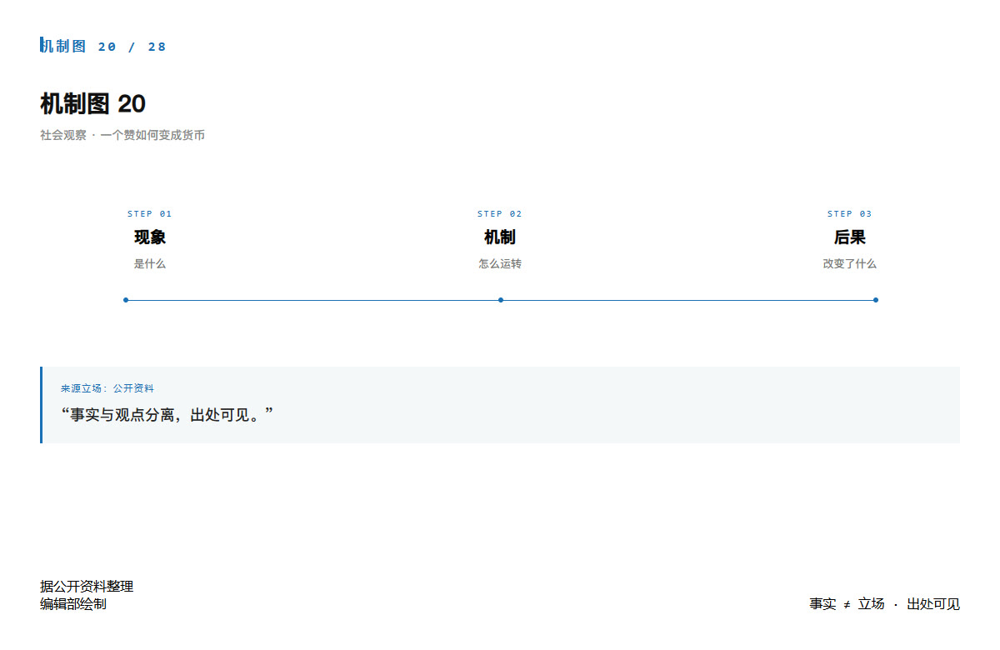

不说话的人，在算法里不算数
社会观察 · 一个赞如何变成货币
从 2018 年那次改规则起，看客和参与者的待遇就不一样了。你默默读完、心里点头，系统里什么都没有发生；你点一下赞，哪怕手滑，账上就多了一笔。
规则内容来自平台公告，推论部分是我根据规则结构做的分析，不是实测数据。不涉及任何具体事件，也不替任何一方说话。事实与判断分开摆。
你有没有发现，现在很多讨论你明明有看法，却懒得打字。不是你没想法，是你知道打出来也不一定有人看见。这种感觉，是被算出来的。
旧规则里，搜索算是一种很弱的表态：你搜了，说明你想知道这件事。你不搜，它也不影响事情本身发生。那时候沉默的人不算消失，只是没那么响亮。
新规则不一样。传播热度、话题因子、互动因子，三样都靠动作来喂。你不评、不转、不搜，你在这套系统里就接近于不存在。你关心的事，也跟着一起沉下去。
这不是把你踢出局，而是让你的权重被稀释到几乎为零。沉默从一种随个人选择的姿态，慢慢变成了一笔要付代价的事：你不出手，你那一边就少一票。
点赞、评论、转发、关注，这些动作本身没有立场。但在计价系统里，它们被统一换算成可见度。动作越多，内容越容易被推给下一个人，再换来更多动作。
头部节点的转发，顶得上普通人几万次点赞，这是社交网络本身的结构。于是撬动转发成了一门技术，互动量不再只是民意的度量，更是动员能力的度量。
算法分不清这两者。一个真心声援的转发，和一个被组织出来的转发，在计数那一刻完全一样。它只认数字往哪儿跳，不问这个数字是怎么来的，又替谁说话。
📌 一个值得记住的判断
表态行为成了可见度的定价依据。你以为你在表达态度，系统看到的是一枚可以计数的筹码；它不读你的心，只数你的手。
四因子里的话题因子，给了话题标签明确的权重。起一个容易共情的标签，拉一段容易站队的导语，再找一批愿意首发的账号，议程就可以被组织出来。
于是「发生了什么」这件事，有了先发优势。议程不再只是自然浮现，它也可以被生产。你以为自己在跟随热点，其实很多时候走进的是别人提前搭好的房间。
这跟性别无关。任何不擅长情绪化动员、也不掌握传播资源的表达，在这些杠杆面前都处在下风。它输的不是道理，是调动手指的能力，和把人组织起来的能力。
普通用户以为自己在声援，在机制层他贡献的是一次互动计价。声援的方向未必有错，可系统做了一步危险的折算：把「人多」折算成「有理」。
一个观点支持者多不多，和它对不对，本来是两件事。但在这套系统里，前者的权重被放大到足以盖过后者，于是声音大的一方，自动地更像是对的。
另一种人是看着的人。他们把判断咽回去，因为知道打一行字换不来什么。时间一长，舆论场里剩下的，全是愿意且能够表态的人。它看起来像民意，其实是一份幸存者名单。
当表态等于计价，表达就变了味。你发一条评论，先掂量它会不会被顶上去；你写一段澄清，先担心它会不会被冲下来。动作还没出口，心里已经先算过一遍账。
沉默的人不是变少了，是被系统地排除在统计之外。你没说，就等于你没想；你没表态，就等于你这一边没人。这套换算一开始就不太讲道理，只是它讲起来很像那么回事。
值得谈的不是逼人人都去表态，而是这套换算能不能被说清楚。下次看见「一边倒」的场面，至少可以提醒自己：那也许只是计数方式造成的结果，不是世界本来的样子。
「沉默的螺旋」理论，1974 年，来源立场：传播学研究
「人觉得自己属于少数时，更倾向于保持沉默。」
算法把这个「少数」变成了可以计算的低互动，于是沉默被再生产了一次。越觉得没人听，越不开口；越不开口，数据上越像没人。

▲ 表态如何兑换成可见度（编辑部绘制）
✍️ 你有没有过「有话想说，最后还是算了」的时刻？
是什么让你停下来的？评论区说说。觉得有用，点个赞、点个「在看」，转给也常沉默的人。
下一篇：当多数人的声音淹掉一切，谁在替细节和情境说话。
资料来源
2018.03 微博热搜排序规则公告：搜索热度 + 传播热度 + 话题因子 + 互动因子。平台公告，规则细节以平台后续调整为准。
头部节点转发对互动量的放大效应，系社交网络结构的行业通行观察，非精确统计。
议程可被组织、互动量折算为民意的机制分析，属编辑部推论，非实证统计结论。
Elisabeth Noelle-Neumann, The Spiral of Silence, 1974。「沉默的螺旋」理论，综述性转述，非逐字引用；立场：传播学研究。
社会观察，不站任何性别立场。事实据公开来源，未证实指控不转述、不评价。拆解规则是为了理解，不是行动指南。